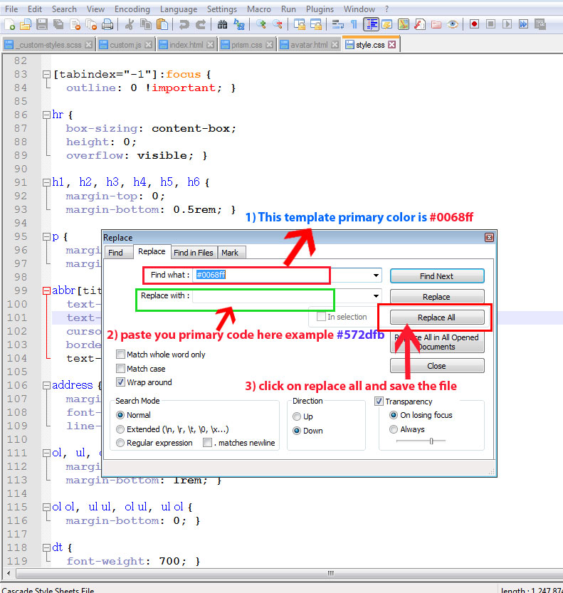
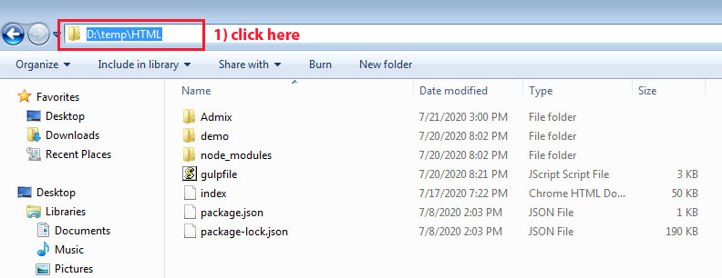
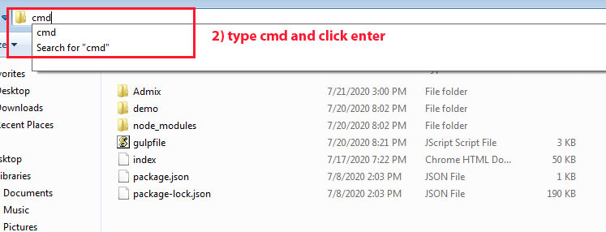

FAQS
How to Change Font Style ?
Step 1:
Go To _fonts.scss (assets/scss/custom/fonts/_fonts.scss )
if you want to change another font-family Go to the site Google Fonts And Slect One font Family and import In to style.css file
How to Select font Family
Example:

Step 2:
And paste Your Selected font-family in _fonts.scss
Example:

How to Change Logo ?
Go To "assets/images/brand" folder and replace your logo with Previous Logos within in image size. note: Please don't increase logo sizes. Replace your logo within given image size. otherwise the logo will not fit in particular place it disturbs the template design.
How to Change Firstmenu dark (light & dark theme)?
open custom.js file go to skins section.. and remove comments for first-menu-dark to enable first-menu-dark style as shown in below
first-menu-dark as shown below
How to Enable Second-menu-dark (light)?
open custom.js file go to skins section.. and remove comments for second-menu-dark to enable first-menu-dark style as shown in below
second-menu-dark as shown below
How to Enable Firstmenu White (dark theme)?
open custom.js file go to skins section.. and remove comments for firstmenu-white to enable firstmenu-white style as shown in below
firstmenu-white as shown below
How to Enable Body style in (Leftmenu & horzontalmenu)?
open custom.js file go to skins section.. and remove comments for body-style to enable body-style style as shown in below
body-style as shown below
How to Enable Horizontalmenu color (horizontalmenu (light & dark themes))?
open custom.js file go to skins section.. and remove comments for horizontal-color to enable horizontal-color style as shown in below
horizontal-color as shown below
How to Enable Horizontalmenu dark in (light theme)?
open custom.js file go to skins section.. and remove comments for horizontal-dark to enable horizontal-dark style as shown in below
horizontal-dark as shown below
How to Enable Horizontalmenu white in (dark theme)?
open custom.js file go to skins section.. and remove comments for horizontalmenu-white to enable horizontalmenu-white style as shown in below
horizontalmenu-white as shown below
How to Enable Singlemenu color in (Both Light & Dark themes)?
open custom.js file go to skins section.. and remove comments for singlemenu-color to enable singlemenu-color style as shown in below
Singlemenu-color as shown below
How to Enable Singlemenu Dark in (Light theme)?
open custom.js file go to skins section.. and remove comments for singlemenu-dark to enable singlemenu-dark style as shown in below
Singlemenu-dark as shown below
How to Enable Singlemenu White in (Dark theme)?
open custom.js file go to skins section.. and remove comments for singlemenu-white to enable singlemenu-white style as shown in below
Singlemenu-white as shown below
If you are not using gulp files you are only using css files go with this menthod
How to choose red color theme?
Open All html files go to near css links . Change the link as shown below
horizontalmenu-white as shown below
How to change red color theme logo?
Open All leftmenu light version html files go to near responsive-logo there you can Change the logo
logo.png with logo-red.png as shown below
Simillarly for every color theme there are separate logos, for example for green color theme logo-green.png
purple color theme logo-purple.png, pink color theme logo-pink.png,orange color theme logo-orange.png
How to change red color theme logo in horizotalmenu?
Open All horizontal light html files go to near desktop-logo there you can Change the logo, and also change the mobile logo as shown below
logo.png with logo-red.png as shown below
Simillarly for every color theme there are separate logos, for example for green color theme logo-green.png
purple color theme logo-purple.png, pink color theme logo-pink.png,orange color theme logo-orange.png
How to change red color theme logo in horizotalmenu darkversion?
Open All horizontal dark html files go to near desktop-logo there you can Change the logo, and also change the mobile logo as shown below
logo-dark.png with logo-red-dark.png as shown below
Simillarly for every color theme there are separate logos, for example for green color theme logo-green-dark.png
purple color theme logo-purple-dark.png, pink color theme logo-pink-dark.png,orange color theme logo-orange-dark.png
How to change leftmenu icons?
Open All html files go to near
In this template for leftmenu we are using boxicons https://boxicons.com/bx bx-home-circle with any icon as shown below
Simillarly you can change icons from the list of boxicons
How to choose purple color theme?
Open All html files go to near css links . Change the link as shown below
horizontalmenu-white as shown below
How to choose Green color theme?
Open All html files go to near css links . Change the link as shown below
horizontalmenu-white as shown below
How to choose pink color theme?
Open All html files go to near css links . Change the link as shown below
horizontalmenu-white as shown below
How to choose Orange color theme?
Open All html files go to near css links . Change the link as shown below
horizontalmenu-white as shown below
How to Change you own primary color theme?
Open style.css if you had notepad++ open style.css in notepadd++ or any code editor
click Ctrl+f follow the below image

By doing above steps the Primary color of your template is updated in style.css
Change your own primary color or demo color theme
Open style-dark.css if you had notepad++ open style.css in notepadd++ or any code editor
click Ctrl+f follow the below image
By doing above steps the Primary color of your template is updated in style.css
If you are using gulp files you want to change the template theme or you want choose colors themes from demo
How to Change template color themes using gulp?
Template color themes
red:#f25f5f;
Purple: #866dfd;
Green: #04a17a;
pink: #b65cff;
orange: #ff774e;
Open _variable.scss
$primary:
Example
#0068ff; // Change the color code herered color theme code is #f25f5f;
$primary:
#f25f5f; // Update the red color code hereRun gulp watch command
simillarly you can choose any one color code above mentioned color themes and update the color theme
Change template primary-hover color in light theme
$primary-hover:
Example
#1e51e8; // Change the color code here$primary-hover:
#f2f2f2;// Hover color should be darker than your primary codeRun gulp watch command
style.css files
Change template background color in light theme
$background:
Example
#dfe6f9; // Change the color code here$background:
#f2f2f2;Run gulp watch command
style.css files
Change template boxshadow color in light theme
$shadow:
Example
12px 7px 13px -3px #b4bfd8; // Change the color code here$shadow:
12px 7px 13px -3px #f2f2f2;Run gulp watch command
style.css files
Change template background in dark theme
$dark-background:
Example
#171b25; // Change the color code here$dark-background:
#2e323a;Run gulp dark command
style-dark.css files
Change template boxshadow in dark theme
$shadow-dark:
Example
12px 7px 13px -3px #060708; // Change the color code here$shadow-dark:
12px 7px 13px -3px #2e323a;Run gulp dark command
style-dark.css files
How to Change you own primary color theme using gulp?
Open _variable.scss
$primary:
Example
#0068ff; // Change the color code here$primary:
#572dfb;

Run gulp watch command
How to Add new html file or rename html file in Leftmenu-Toggle-Light-Sidebar & Leftmenu-Toggle-Dark-Sidebar?
If you had changed HTML file names then you should be given the link in HTML pages
for example : If I changed index.html into index5.html
open all HTML pages and change the link index.html to index5.html as shown below
or if you want to add new page example: xyz.html this xyz.html link should be given in all left menu and left menu dark HTML pages
and that link you want to place in elements section then go to near
and goto the links and add this xyz.html link in
elements section as shown below
Elements
Alerts xyz like this add your new link in all html pagesfor every tab, we had given name related to that tab so that you can easily find out section , and go to that particular section and add your new link
for example:for ecommerce :
for apps :
for advanced :